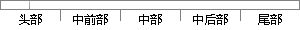

温度分布如图 1.1 (b)所示，可以看出
片段位置图

相似结果
相似片段：
即表面换热系数对热效应的影响，取换 热系数h为150、900、1500 W/(m 2 ∙K)分别对应铝、紫铜和涂抹导热硅脂的散热材料。得到输出端面内x = 0 ，y方向上的温度分布，如图7(b)所示。 由图7可以看出，传热系数越大，晶体整体的温度越低，但出射端面上的最高温度和最低温度的变化不大，即传热系数的大小并不会有效地改变晶体的温度分布情况
| 对比库： | 已发表资源库 |
| 来源： | "Thermal Effect Analysis of 1560 nm Laser Frequency Doubling in a PPLN Crystal", Chinese Journal of Lasers, 2015. 查看来源 |
| 相似率 | 80% （严重抄袭） |